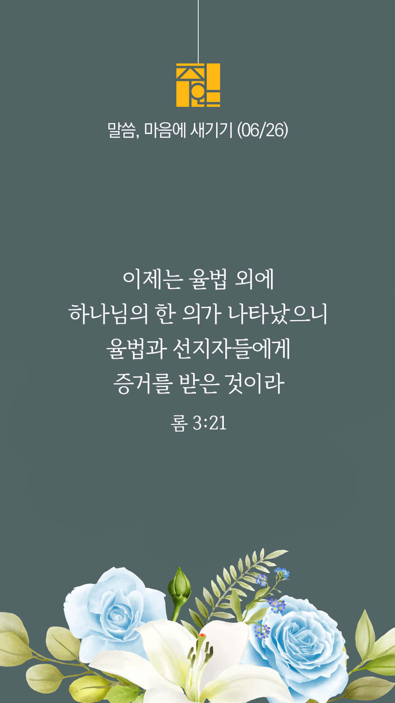

기도실 안내
2022년 06월 26일 (주일)
- 온라인 기도실은 온 회중이 함께 주님 앞으로 나아가는 자리입니다
- 30분 정도 여유를 가지고 하시기 바랍니다
- 말씀과 묵상, 찬양과 기도로 나아갑니다
- 배경 음악이 나올 수 있습니다 볼륨을 조절해주세요
준비가 되셨으면 아래의 버튼을 눌러주세요
할렐루야
내 영혼아 여호와를 찬양하라
시 146:1
- 가사를 묵상하며 읽습니다
하나님은 우리의 피난처가 되시며
하나님은 우리의
피난처가 되시며
환난 중에 우리의
힘과 도움이시라
너희는 가만히 있어
주가 하나님 됨 알지어다
열방과 세계 가운데
주가 높임을 받으리라
할렐루야
내 영혼아 여호와를 찬양하라
시 146:1
- 가사를 묵상하며 읽습니다
사랑합니다 내 아버지
찬양합니다 내 온 맘 다하여
선포합니다 예수 그리스도
주님 오심을 기다리며
할렐루야
내 영혼아 여호와를 찬양하라
시 146:1
하나님은 우리의 피난처가 되서며
by 올네이 션스
위의 찬양이 끝나면 말씀읽기를 눌러주시면 됩니다
주의 말씀은 내 발에 등이요
내 길에 빛이니이다 (시119:105)
오늘의 말씀입니다
음악 소리가 크면 조절하시기 바랍니다

마음의 묵상
롬 3:21-22
“이제는 율법 외에 하나님의 한 의가 나타났으니 율법과 선지자들에게 증거를 받은 것이라 곧 예수 그리스도를 믿음으로 말미암아 모든 믿는 자에게 미치는 하나님의 의니 차별이 없느니라”
1. 하나님의 의는 무엇으로 말미암는다고 말씀하나요?
2. 당신은 믿음 안에 굳건히 서 계신가요?
3. “주님, 어떤 상황 속에서도 주님을 굳게 믿고 붙잡게 하소서” 간절히 기도합시다.
주님, 믿습니다.
회개, 삶의 방향을 바꾸는 결정
주의 백성을 용서하옵소서.
“주는 계신 곳 하늘에서
그들의 기도와 간구를 들으시고
그들의 일을 돌보시오며
주께 범죄한 주의 백성을 용서하옵소서”
- 역대하 6:39 -
3분 정도 회개하며 주님 앞에 나아갑니다
사슴이 시냇물을 찾기에 갈급함 같이
시 42:1
- 다음의 말씀을 소리 내어 읽습니다
[역대하 6장 40-42절]
40 나의 하나님이여 이제 이 곳에서 하는 기도에 눈을 드시고 귀를 기울이소서
41 여호와 하나님이여 일어나 들어가사 주의 능력의 궤와 함께 주의 평안한 처소에 계시옵소서 여호와 하나님이여 원하옵건대 주의 제사장들에게 구원을 입게 하시고 또 주의 성도들에게 은혜를 기뻐하게 하옵소서
사슴이 시냇물을 찾기에 갈급함 같이
시 42:1
- 다음의 말씀을 소리 내어 읽습니다
[역대하 6장 40-42절]
42 여호와 하나님이여 주의 기름 부음 받은 자에게서 얼굴을 돌리지 마시옵고 주의 종 다윗에게 베푸신 은총을 기억하옵소서 하였더라
하나님 나라
1. 하나님의 나라가 속히 이 땅에 임하게 하소서
하나님 아버지,
전쟁과 분쟁, 정치적 박해, 식량 부족 등의 이유로 고향을 떠나 방황하고 있는 1억명 이상의 난민들을 긍휼히 여겨주시고, 자비를 베풀어주소서. 특히 난민의 42%가 어린 아이들인 것으로 집계 되고 있는데, 이들에게 필요한 도움의 손길이 속히 임하게 하소서.
간절한 마음으로 3분 정도 기도합시다
남과 북
2. 남북한이 속히 복음으로 통일되게 하소서
하나님 아버지,
코로나19와 식량 부족으로 고통받고 있는 북한 주민들을 도와주소서. 그들에게 필요한 식량과 치료제가 안정적으로 공급되게 하소서. 북한 지도자들과 정권도 무력을 통한 방법을 내려놓게 하시고 화해와 평화의 방법을 찾게 하시고, 통일을 위하여 준비하게 하소서.
간절한 마음으로 3분 정도 기도합시다
대한민국
3. 우리나라가 하나님을 경외하는 나라가 되게 하소서
하나님 아버지,
우리나라 가정 안의 정서적, 물리적 학대가 사라지게 하시고, 특별히 코로나 기간동안 압도적 비율로 증가한 노인학대가 멈춰지게 하소서. 각 가정마다 사랑과 존경이 넘쳐나게 하시고, 가정이 안전하고 평안한 곳이 되게 하여주소서. 가족의 해체와 동성애 합법화를 시도하는 차별금지법안이 속히 폐기되게 하소서.
간절한 마음으로 3분 정도 기도합시다
다음 세대
4. 한국교회가 성령으로 새롭게 부흥되게 하소서
하나님 아버지,
올 여름 대면으로 준비하는 수련회와 성경학교, 여름행사에 부흥의 역사가 일어나게 하소서. 준비하는 모든 모임과 교제 가운데 성령의 임재가 임하게 하시고, 준비하는 모든 분들의 심령 가운데 가슴 벅찬 기대와 감격으로 충만케 하여 주소서. 다음 세대가 하나님을 사랑하고 예수의 길을 따라 살아가는 하나님의 자녀들이 되게 하소서.
간절한 마음으로 3분 정도 기도합시다
주안교회
5. 주안교회가 선교적 삶으로 복음의 빛을 비추는 교회가 되게 하소서
하나님 아버지,
주안의 모든 성도들이 하나님의 놀라운 구원의 은혜에 감사하며 하나님의 선한 능력 가운데 삶의 현장에서 선교적 삶을 살아가게 하소서. 그리하여 주안의 성도들이 주님께 칭찬받는 종이 되게 하시고, 이 땅에서도 종노릇의 기쁨을 누리며 살아가는 복된 성도들이 되게 하여 주옵소서.
간절한 마음으로 3분 정도 기도합시다
감사의 기도
- 오늘 기도를 인도하신 주님께 감사를 올려드립니다
- 아래의 구절을 읽고 주님께 감사의 마음을 올려드립시다
“감사로 제사를 드리는 자가
나를 영화롭게 하나니
그의 행위를 옳게 하는 자에게 내가 하나님의 구원을 보이리라”
- 시편 50장 23절 -
고요한 가운데 잠시 침묵하시기 바랍니다
파송, 세상을 향하여
- 오늘의 온라인 기도를 마쳤습니다
기도를 들으신 주님께서 평안히 가라 하십니다
주님께서 우리와 함께 하시니 두려울 것이 없습니다
새벽을 깨우며
- 새벽기도회 안내입니다